Chapter 00 · source-backed walkthrough
Start with the whole system
Follow a purchase event from a producer, through replicated Kafka storage and a stateful processing engine, into an Iceberg snapshot, then through Spark with Comet or an application using DataFusion. This is a composition of systems with different owners and commit boundaries, not a mandatory single product stack.
Spark across multiple executors: execution and recovery
Follow the driver, Kafka readers, task threads, RPCs and shuffle, then trace checkpoint logs, state versions and failure recovery. Thirteen diagrams distinguish input replay from exactly-once sink effects, with pinned implementation and test excerpts.
commitSync, commitAsync, Flink and Spark
Read the offset-commit deep dive: nine diagrams trace caller threads, coordinator RPCs, failure windows, Flink checkpoints, Spark checkpoint logs and legacy DStreams.
Kafka failure recovery: go deeper
Three source-backed chapters, from cluster ownership down to replay and marker completion.
New deep dive: Kafka RPCs and Flink execution
Start high level: pods → threads → messages → storage → recovery → presentation mental model
01
The deployment map
Read the guide in layers. First identify processes and machines. Next identify who calls whom, over which transport. Then find the durable progress record and the exact point at which a result becomes visible. Finally follow the same path through failures and performance limits.
The arrows below show a representative architecture. Kafka Streams, Connect, Flink and Spark are alternative or cooperating processing paths. Iceberg stores table metadata over data files. DataFusion executes query plans inside a host application. Comet embeds native execution into Spark; it does not replace Spark scheduling.
A streaming lakehouse and its query paths
High-level composition. The Iceberg catalog and object store are distinct services; Rust and Arrow operate inside native execution processes.

| Layer | Concrete units | What it owns |
|---|---|---|
| Durable log | Kafka brokers; partition leaders and followers; controller quorum | Ordered records per partition, replication, transaction decisions and consumer progress. |
| Distributed compute | Flink JobMaster / TaskManagers; Spark driver / executors | Assignment, task attempts, communication, state recovery and scheduling. |
| Embedded stream framework | Kafka Streams application instances; Connect worker processes | Partition tasks or connector tasks, local / framework state and connector-specific writes. |
| Table storage | Iceberg catalog + immutable metadata and data files | Atomic table snapshot publication and consistent snapshot reads. |
| Native execution | DataFusion plans; Comet native library; Arrow buffers; Rust runtime | Batch execution, memory ownership, vector operations and local concurrency. |
02
Separate the three communication planes
A scheduler sends work descriptions and receives health / completion messages. It usually does not relay the records exchanged by workers. A checkpoint or transaction adds a third path: evidence that input progress, state and output are safe to recover together.
A local method call, JNI call, asynchronous queue handoff, network RPC, and durable storage write have different failure properties. JNI is an in-process ABI boundary. Kafka Produce is a network protocol request. A Kafka record acknowledgement is not a sink business acknowledgement.
Control, data and recovery planes
Separate paths prevent the common mistake of drawing every record through a coordinator.

03
An example to carry through the chapters
Our example event is {event_id: purchase-7, customer_id: c42, amount: 10}. It lands in orders partition 0 at offset 104. A Flink keyed operator increments the customer total from 90 to 100. The next source offset is 105. Checkpoint 42 captures that position and the total. An Iceberg sink publishes the corresponding files as snapshot S900.
A second sink could instead write a Kafka transaction T42. These are separate example variants; a single Flink checkpoint does not create a globally atomic transaction across Kafka and Iceberg. Each sink has its own commit and visibility protocol. The end-to-end chapter enumerates the crash windows.
All performance numbers in the guide are illustrative calculations. Source inspection establishes code behavior; no throughput benchmark or live fault-injection experiment was performed.
Inside the implementation
These excerpts come directly from the code paths used above. Expand a component to move from the system view into its implementation.
iceberg-flink IcebergFilesCommitter.java:231
Checkpoint completion publishes files through an Iceberg snapshot.
iceberg/flink/v2.3/flink/src/main/java/org/apache/iceberg/flink/sink/IcebergFilesCommitter.java · 48330b8dacab
230 @Override
231 public void notifyCheckpointComplete(long checkpointId) throws Exception {
232 super.notifyCheckpointComplete(checkpointId);
233 // It's possible that we have the following events:
234 // 1. snapshotState(ckpId);
235 // 2. snapshotState(ckpId+1);
236 // 3. notifyCheckpointComplete(ckpId+1);
237 // 4. notifyCheckpointComplete(ckpId);
238 // For step#4, we don't need to commit iceberg table again because in step#3 we've committed all
239 // the files,
240 // Besides, we need to maintain the max-committed-checkpoint-id to be increasing.
241 if (checkpointId > maxCommittedCheckpointId) {
242 LOG.info("Checkpoint {} completed. Attempting commit.", checkpointId);
243 commitUpToCheckpoint(dataFilesPerCheckpoint, flinkJobId, operatorUniqueId, checkpointId);
244 this.maxCommittedCheckpointId = checkpointId;Test source inspected or located, not executed: TestIcebergFilesCommitter.java · public void testRecoveryFromSnapshotWithoutCompletedNotification
comet-jni jni_api.rs:1242
Native execution uses a DataFusion plan inside the Spark executor process.
datafusion-comet/native/core/src/execution/jni_api.rs · 1628c520096e
1241 // so we should always execute partition 0.
1242 let stream = root_op.native_plan.execute(0, task_ctx)?;
1243
1244 if exec_context.scans.is_empty() && exec_context.shuffle_scans.is_empty() {
1245 // No JVM data sources — spawn onto tokio so the executor
1246 // thread parks in blocking_recv instead of busy-polling.
1247 exec_context.batch_producer =
1248 Some(BatchProducer::spawn(&get_runtime(), stream));
1249 } else {
1250 exec_context.stream = Some(stream);
1251 }
1252 exec_context.root_op = Some(root_op);
1253 } else {
1254 // Pull input batches
1255 pull_input_batches(exec_context)?;df-iceberg mod.rs:121
Catalog-backed adapter exposes Iceberg scanning and insert planning to DataFusion.
datafusion-iceberg/crates/datafusion/src/table/mod.rs · b12e9871dd2b
120 #[async_trait]
121 impl TableProvider for IcebergTableProvider {
122 fn schema(&self) -> ArrowSchemaRef {
123 self.schema.clone()
124 }
125
126 fn table_type(&self) -> TableType {
127 TableType::Base
128 }
129
130 async fn scan(
131 &self,
132 _state: &dyn Session,
133 projection: Option<&Vec<usize>>,
134 filters: &[Expr],flink-deploy TaskExecutor.java:663
TaskExecutor accepts a deployment descriptor and starts a task.
flink/flink-runtime/src/main/java/org/apache/flink/runtime/taskexecutor/TaskExecutor.java · 07805482705f
662 @Override
663 public CompletableFuture<Acknowledge> submitTask(
664 TaskDeploymentDescriptor tdd, JobMasterId jobMasterId, Duration timeout) {
665
666 final JobID jobId = tdd.getJobId();
667 JobInformation jobInformation = null;
668 try {
669 jobInformation = tdd.getJobInformation();
670 } catch (IllegalStateException ignored) {
671 // Expected when job information is offloaded to blob storage and not yet loaded.
672 } catch (IOException | ClassNotFoundException e) {
673 log.debug("Could not deserialize job information for early MDC enrichment", e);
674 }
675 try (MdcCloseable ignored =
676 MdcUtils.withContext(spark-launch CoarseGrainedSchedulerBackend.scala:457
Driver serializes task descriptions and sends LaunchTask to executor endpoints.
spark/core/src/main/scala/org/apache/spark/scheduler/cluster/CoarseGrainedSchedulerBackend.scala · f9358a5587a2
456 // Launch tasks returned by a set of resource offers
457 private def launchTasks(tasks: Seq[Seq[TaskDescription]]): Unit = {
458 for (task <- tasks.flatten) {
459 val serializedTask = TaskDescription.encode(task)
460 if (serializedTask.limit() >= maxRpcMessageSize) {
461 Option(scheduler.taskIdToTaskSetManager.get(task.taskId)).foreach { taskSetMgr =>
462 try {
463 var msg = "Serialized task %s:%d was %d bytes, which exceeds max allowed: " +
464 s"${RPC_MESSAGE_MAX_SIZE.key} (%d bytes). Consider increasing " +
465 s"${RPC_MESSAGE_MAX_SIZE.key} or using broadcast variables for large values."
466 msg = msg.format(task.taskId, task.index, serializedTask.limit(), maxRpcMessageSize)
467 taskSetMgr.abort(msg)
468 } catch {
469 case e: Exception => logError("Exception in error callback", e)
470 }flink-checkpoint CheckpointCoordinator.java:1360
Completed checkpoint storage precedes notifications.
flink/flink-runtime/src/main/java/org/apache/flink/runtime/checkpoint/CheckpointCoordinator.java · 07805482705f
1359 */
1360 private void completePendingCheckpoint(PendingCheckpoint pendingCheckpoint)
1361 throws CheckpointException {
1362 final long checkpointId = pendingCheckpoint.getCheckpointID();
1363 final CompletedCheckpoint completedCheckpoint;
1364 final CompletedCheckpoint lastSubsumed;
1365 final CheckpointProperties props = pendingCheckpoint.getProps();
1366
1367 completedCheckpointStore.getSharedStateRegistry().checkpointCompleted(checkpointId);
1368
1369 try {
1370 completedCheckpoint = finalizeCheckpoint(pendingCheckpoint);
1371
1372 // the pending checkpoint must be discarded after the finalization
1373 Preconditions.checkState(pendingCheckpoint.isDisposed() && completedCheckpoint != null);Test source inspected or located, not executed: CheckpointCoordinatorRestoringTest.java
fk-emit KafkaRecordEmitter.java:45
The emitted record advances checkpointable split state to offset+1.
flink-connector-kafka/flink-connector-kafka/src/main/java/org/apache/flink/connector/kafka/source/reader/KafkaRecordEmitter.java · ae656dd6fe23
44 @Override
45 public void emitRecord(
46 ConsumerRecord<byte[], byte[]> consumerRecord,
47 SourceOutput<T> output,
48 KafkaPartitionSplitState splitState)
49 throws Exception {
50 try {
51 sourceOutputWrapper.setSourceOutput(output);
52 sourceOutputWrapper.setTimestamp(consumerRecord.timestamp());
53 deserializationSchema.deserialize(consumerRecord, sourceOutputWrapper);
54 splitState.setCurrentOffset(consumerRecord.offset() + 1);
55 } catch (Exception e) {
56 throw new IOException("Failed to deserialize consumer record due to", e);
57 }
58 }fk-commit KafkaCommitter.java:103
Retryable and fenced transaction failures are distinguished.
flink-connector-kafka/flink-connector-kafka/src/main/java/org/apache/flink/connector/kafka/sink/internal/KafkaCommitter.java · ae656dd6fe23
102 producer = writerProducer.orElseGet(() -> getProducer(committable));
103 producer.commitTransaction();
104 backchannel.send(TransactionFinished.successful(committable.getTransactionalId()));
105 } catch (RetriableException e) {
106 LOG.warn(
107 "Encountered retriable exception while committing {}.", transactionalId, e);
108 request.retryLater();
109 } catch (ProducerFencedException e) {
110 logFencedRequest(request, e);
111 handleFailedTransaction(producer);
112 request.signalFailedWithKnownReason(e);
113 } catch (InvalidTxnStateException e) {
114 // This exception only occurs when aborting after a commit or vice versa.
115 // It does not appear on double commits or double aborts.
116 LOG.error(Test source inspected or located, not executed: KafkaCommitterTest.java